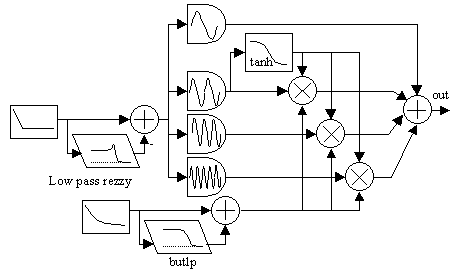
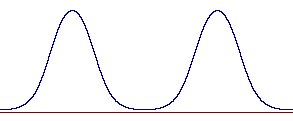
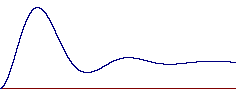
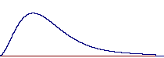
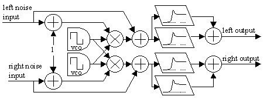
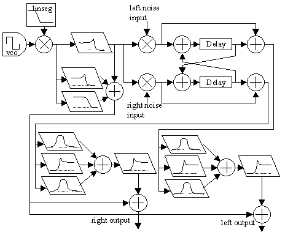

Hans Mikelson
Introduction
Csound is a fun tool for creating percussion sounds. In this article I present bass drum, cymbal and snare drum instruments. You may wish to review my other article on Csound drums in the Autumn 1999 Csound Magazine. These instruments do not necessarily sound like realistic instruments. My hope is to create flexible instruments that have similar characteristics to the original instruments but have their own unique voice.
I like to use a large number of p-fields with percussion instruments. These are used to control many different aspects of the sound, and enable me to coax a wide variety of sounds from a single instrument.
Source of Noise
Most of my percussion instruments begin with some type of noise as the initial sound. In this example I use the pinkish noise opcode which produces a less harsh noise than white noise. I use two different seeds to generate two uncorrelated noise signals which produces a stereo effect. Another approach I have tried is to generate a wave sample of noise. In this case the noise could be a sample from an analog synthesizer's noise generator, the amplified hiss from a noisy mixer, the distorted roar of a tiger or anything else.
Bass Drum 2
Here is another electronic-sounding bass drum. It is largely based on additive synthesis. An initial sine wave is generated and a series of overtones is added to it.
One thing I tend to do is to keep adding more p-fields to the score as I wish to control more aspects of the sound. For this bass drum I ended up with 17 p-fields! Here are the ones that may need further explanation with approximate ranges:
ihif = p5 ; This is the initial high frequency (1000-100 hz) ilof = p6 ; This is the final low frequency (150-40 hz) idec = p8 ; The pitch goes from high to low in this time (.02-.2 sec) itens = p9 ; How much rezzy pitch is added to the pitch envelope (0-1) ihit = p10 ; The mix between amp env. and the low pass amp env. (0-1) iq = p11 ; Resonance on pitch bend filter (1-100) iod = p12 ; Amplitude of overtones (0-1) ioc = p13 ; Control of overtone amplitudes (-1 to 1) iof = p14 ; Control of overtone frequencies (-1 to 1) isus = p15 ; Sustain is the level the exp amp env decays to. (.001 to 1) iqf = p16 ; FM resonance frequency of the pitch bend filter. (8-100) ilpf = p17 ; Amp low pass frequency (1-10)
 Figure 1. Bass drum block diagram.
A sine wave of twice the base frequency is wave shaped with tanh and used as an envelope for the overtones. As a result the higher harmonics only occur in pulses synchronized with the extremes of the original signal. Generating output from different points along the instrument path is helpful in understanding what is going on inside the instrument. The pulse envelope shown in figure 2 was acquired in this way.
 Figure 2. Hyperbolic tangent shaped sine pulse envelope.
asig2a oscil 1,afqc3*2,1,.25 asigo = asig2a+.9 asig2b = -tanh(asigo*ioc1)+1
A pitch envelope is used to sweep the frequency typically from a high frequency to a low frequency. This is passed through a resonant low pass filter to add some "wiggles" to it as can be seen in Figure 3.
 Figure 3. Pitch bend envelope shaped with rezzy.
afqc linseg ihif,idec,ilof,idur*-idec,ilof afqc2 rezzy afqc,20,iq afqc3 = afqc-afqc2*itens
The original signal and the modified signal are then mixed together. The variable itens is used to control how large an effect the oscillating envelope has. The variable iq controls how long it oscillates. A large resonance results in frequency modulation since this envelope is applied to the frequency of the signal.
The amplitude envelope is first generated using an exponential curve from one to close to zero. A low pass filtered version of this is generated which is shown in Figure 4.
 Figure 4. Amplitude envelope shaped with butlp.
aamp expseg 1,idur,isus aamp2 butlp aamp,8 aamp3 = (aamp*ihit+aamp2*(1-ihit))
The two signals are mixed together to allow for different effects. A pure exponential wave has a sharp attack. The pure filtered exponential curve has a slow attack. Mixtures of the two can have an initial attack with a slower swell later on.
Finally, the pulsed overtones are mixed with the original signal.
asig2c = (asig2a*asig2b)*aamp3^ioc1 asig3c = (asig3a*asig3b)*aamp3^ioc2 asig5c = (asig5a*asig5b)*aamp3^ioc3 aout = (asig*aamp3+(asig2c+asig3c+asig5c)*iod)*adclk*iamp
The example demonstrates a wide variety of bass drum sounds ranging from muted kicks to extreme laser zaps.
Cymbal
The next instrument is a cymbal. It is based partially on ring modulation. This instrument relies on an external noise source such as pink noise. This can be an external noise generator or any sound source. The instrument expects the noise source to be in the range of -1 to 1.
The p-fields to control the instrument are as follows:
ifco = p7 ; Fco of the rezzy filter (100-5000) iq = p8 ; Q of the rezzy filter (1-100) iotv = p9 ; Overtone volume level (0-1) iotf = ifco*p10 ; The overtone frequency for the second rezzy filter iotq = iq*p11 ; Q for the second rezzy filter
 Figure 5. Cymbal block diagram.
This instrument relies on two sound sources; an external stereo noise source and two vco oscillators of different frequencies.
asig1 vco 1, ifqc, 2, .5, 1, 1 ; Generate impulse asig2 vco 1, ifqc*1.5, 2, .5, 1, 1 ; Generate impulse
The vco's and noise are multiplied together and shaped by an exponential envelope (not shown in the figure). Additional noise is mixed in before the sound is passed through two parallel, resonant high-pass filters with different cut off frequencies.
aoutl1 rezzy asigl, ifco, iq, 1 ; Apply amp envelope and declick aoutr1 rezzy asigr, ifco, iq, 1 ; Apply amp envelope and declick
This instrument produces some interesting tones, although it does not sound much like a cymbal and only seems useful for producing very short sounds. It has a somewhat metallic character, and perhaps someone will be able to use this as a starting point for a better cymbal.
Snare Drum
I also present the latest version of my snare drum. I have been going through a number of iterations on this instrument.
Following are the p-fields which may need some description:
irez = p7 ; Controls Q on the drum tone filter (0-1) ispdec = p8 ; Spring decay ispton = p9 ; Spring tone controls the pitch of the noise (.5-2.0) ispmix = p10 ; Spring mix controls the balance between noise and tone (0-1) ispq = p11 ; Spring Q controls resonance of the noise filter (1-100) ipbnd = p12 ; Pitch bend controls the amount the pitch bends (.5-2.0) ipbtm = p13 ; Pitch bend time (.02-.4)
 Figure 6. Snare drum block diagram.
In this instrument I generate a pulse of sound with a vco square wave. This is filtered by three filters in parallel and sent to both outputs.
aosc1 vco 1, ifqc, 2, 1, 1, 1 aosc = -aosc1*aamp aosc2 butterlp aosc, 12000 asig1 moogvcf aosc, ifqc*kptch, .9*irez asig2 moogvcf aosc*.5, ifqc*2.1*kptch, .75*irez
The output from one filter is used to multiply the input noise signals. This gives the noise a pulsed sound, a little like the spring bouncing against the bottom of a snare. The signal is then sent to a cross feed-back delay network to make a more complex sound.
arnd1 = arnd1*2*asig1 arndr1 delay arnd1-arndr2*.6, .01 arnd2 = arnd2*2*asig1 arndr2 delay arnd2-arndr1*.6, .01
Next the signal passes through a parallel set of two band-pass filters and a high-pass filter. This gives the sound a little more character. Finally a high shelf filter is used to slightly attenuate the high frequencies.
ahp1l rezzy arnd1+arndr1, 2700*ispton*kptch, 5*ispq, 1 ahp2l butterbp arnd1, 2000*ispton*kptch, 500/ispq ahp3l butterbp arnd1, 5400*ispton*kptch, 500/ispq ahpl pareq ahp1l+ahp2l*.7+ahp3l*.3, 15000, .1, .707, 2
It is fun to play with different sound sources for the input on this instrument. A voice used as input can become intelligible during a drum roll.
Coda
I present these instruments so that others can improve them and share their improvements. I hope this gives you a good start on designing your own drum set. Having a large number of p-fields may seem like a burden to program, but one of my intentions in designing these drums was to use Pmask to generate rhythms. Each of the parameters can be given a subtle (or extreme) variation throughout the drum part.